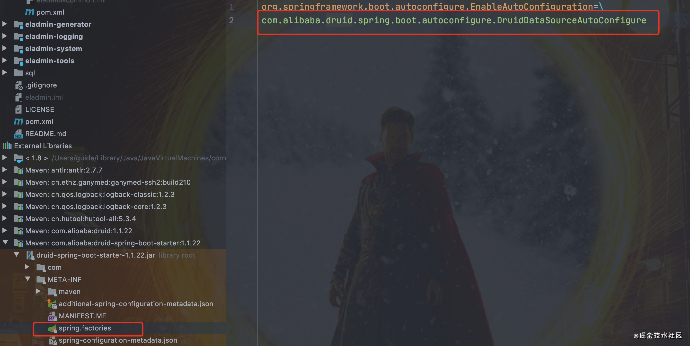

前言
使用过 Spring 的小伙伴，一定有被 XML 配置统治的恐惧。即使 Spring 后面引入了基于注解的配置，我们在开启某些 Spring 特性或者引入第三方依赖的时候，还是需要用 XML 或 Java 进行显式配置。
举个例子。没有 Spring Boot 的时候，我们写一个 RestFul Web 服务，还首先需要进行如下配置。
1 |
|
spring-servlet.xml
1 | <beans xmlns="http://www.springframework.org/schema/beans" |
但是，Spring Boot 项目，我们只需要添加相关依赖，无需配置，通过启动下面的 main() 方法即可。
1 |
|
并且，我们通过 Spring Boot 的全局配置文件 application.properties 或 application.yml即可对项目进行设置比如更换端口号，配置 JPA 属性等等。
为什么 Spring Boot 使用起来这么酸爽呢？
这得益于其自动装配。
自动装配可以说是 Spring Boot 的核心，那究竟什么是自动装配呢？
什么是 SpringBoot 自动装配？
我们现在提到自动装配的时候，一般会和 Spring Boot 联系在一起。但是，实际上 Spring Framework 早就实现了这个功能。`Spring Boot 只是在其基础上，通过 SPI 的方式，做了进一步优化。
SpringBoot定义了一套接口规范，这套规范规定：SpringBoot在启动时会扫描外部引用 jar 包中的META-INF/spring.factories文件，将文件中配置的类型信息加载到 Spring 容器（此处涉及到 JVM 类加载机制与 Spring 的容器知识），并执行类中定义的各种操作。对于外部 jar 来说，只需要按照SpringBoot定义的标准，就能将自己的功能装置进SpringBoot。
没有 Spring Boot 的情况下，如果我们需要引入第三方依赖，需要手动配置，非常麻烦。但是，Spring Boot 中，我们直接引入一个 starter 即可。比如你想要在项目中使用 redis 的话，直接在项目中引入对应的 starter 即可。
1 | <dependency> |
引入 starter 之后，我们通过少量注解和一些简单的配置就能使用第三方组件提供的功能了。
在我看来，自动装配可以简单理解为：通过注解或者一些简单的配置就能在 Spring Boot 的帮助下实现某块功能。
SpringBoot 是如何实现自动装配的？
我们先看一下 SpringBoot 的核心注解 SpringBootApplication 。
1 |
|
大概可以把 @SpringBootApplication看作是 @Configuration、@EnableAutoConfiguration、@ComponentScan 注解的集合。根据 SpringBoot 官网，这三个注解的作用分别是：
@EnableAutoConfiguration： 启用 SpringBoot 的自动配置机制
@Configuration： 允许在上下文中注册额外的 bean 或导入其他配置类
@ComponentScan： 扫描被@Component (@Service,@Controller)注解的 bean，注解默认会扫描启动类所在的包下所有的类 ，可以自定义不扫描某些 bean。如下图所示，容器中将排除 TypeExcludeFilter 和 AutoConfigurationExcludeFilter。

@EnableAutoConfiguration 是实现自动装配的重要注解，我们以这个注解入手。
@EnableAutoConfiguration: 实现自动装配的核心注解
EnableAutoConfiguration 只是一个简单地注解，自动装配核心功能的实现实际是通过 AutoConfigurationImportSelector 类。
1 |
|
我们现在重点分析下 AutoConfigurationImportSelector 类到底做了什么？
AutoConfigurationImportSelector: 加载自动装配类
AutoConfigurationImportSelector类的继承体系如下：
1 | public class AutoConfigurationImportSelector implements DeferredImportSelector, BeanClassLoaderAware, ResourceLoaderAware, BeanFactoryAware, EnvironmentAware, Ordered { |
可以看出，AutoConfigurationImportSelector 类实现了 ImportSelector 接口，也就实现了这个接口中的 selectImports方法，该方法主要用于获取所有符合条件的类的全限定类名，这些类需要被加载到 IoC 容器中。
1 | private static final String[] NO_IMPORTS = new String[0]; |
这里我们需要重点关注一下getAutoConfigurationEntry()方法，这个方法主要负责加载自动配置类的。
该方法调用链如下：

现在我们结合getAutoConfigurationEntry()的源码来详细分析一下：
1 | private static final AutoConfigurationEntry EMPTY_ENTRY = new AutoConfigurationEntry(); |
第 1 步:
判断自动装配开关是否打开。默认spring.boot.enableautoconfiguration=true，可在 application.properties 或 application.yml 中设置

第 2 步 ：
用于获取EnableAutoConfiguration注解中的 exclude 和 excludeName。

第 3 步
获取需要自动装配的所有配置类，读取META-INF/spring.factories
1 | spring-boot/spring-boot-project/spring-boot-autoconfigure/src/main/resources/META-INF/spring.factories |

从下图可以看到这个文件的配置内容都被我们读取到了。XXXAutoConfiguration的作用就是按需加载组件。

不光是这个依赖下的META-INF/spring.factories被读取到，所有 Spring Boot Starter 下的META-INF/spring.factories都会被读取到。
所以，你可以清楚滴看到， druid 数据库连接池的 Spring Boot Starter 就创建了META-INF/spring.factories文件。
如果，我们自己要创建一个 Spring Boot Starter，这一步是必不可少的。

第 4 步 ：
到这里可能面试官会问你:“spring.factories中这么多配置，每次启动都要全部加载么？”。
很明显，这是不现实的。我们 debug 到后面你会发现，configurations 的值变小了。

因为，这一步有经历了一遍筛选，@ConditionalOnXXX 中的所有条件都满足，该类才会生效。
1 |
|
有兴趣的童鞋可以详细了解下 Spring Boot 提供的条件注解
@ConditionalOnBean：当容器里有指定 Bean 的条件下@ConditionalOnMissingBean：当容器里没有指定 Bean 的情况下@ConditionalOnSingleCandidate：当指定 Bean 在容器中只有一个，或者虽然有多个但是指定首选 Bean@ConditionalOnClass：当类路径下有指定类的条件下@ConditionalOnMissingClass：当类路径下没有指定类的条件下@ConditionalOnProperty：指定的属性是否有指定的值@ConditionalOnResource：类路径是否有指定的值@ConditionalOnExpression：基于 SpEL 表达式作为判断条件@ConditionalOnJava：基于 Java 版本作为判断条件@ConditionalOnJndi：在 JNDI 存在的条件下差在指定的位置@ConditionalOnNotWebApplication：当前项目不是 Web 项目的条件下@ConditionalOnWebApplication：当前项目是 Web 项 目的条件下
总结
Spring Boot 通过@EnableAutoConfiguration开启自动装配，通过 SpringFactoriesLoader 最终加载META-INF/spring.factories中的自动配置类实现自动装配，自动配置类其实就是通过@Conditional按需加载的配置类，想要其生效必须引入spring-boot-starter-xxx包实现起步依赖